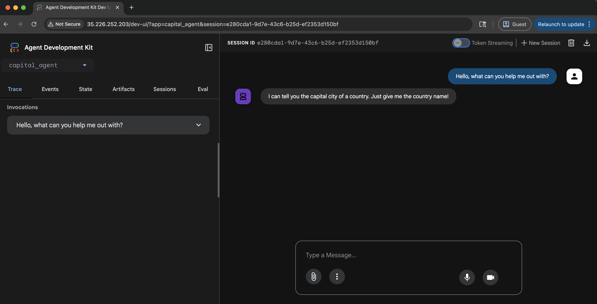

部署到 Google Kubernetes Engine (GKE)¶
GKE 是 Google Cloud 所提供的受管 Kubernetes 服務。它讓你可以使用 Kubernetes 部署與管理容器化應用程式。
要部署你的 agent，你需要在 GKE 上有一個正在運作的 Kubernetes 叢集。你可以透過 Google Cloud Console 或 gcloud 命令列工具來建立叢集。
在這個範例中，我們將部署一個簡單的 agent 到 GKE。這個 agent 會是一個 FastAPI 應用程式，並使用 Gemini 2.0 Flash 作為大型語言模型 (LLM)。我們可以透過設定環境變數 GOOGLE_GENAI_USE_VERTEXAI，選擇使用 Vertex AI 或 AI Studio 作為 LLM 提供者。
環境變數¶
請依照 Setup and Installation 指南設定你的環境變數。你也需要安裝 kubectl 命令列工具。相關安裝說明可參考 Google Kubernetes Engine Documentation。
export GOOGLE_CLOUD_PROJECT=your-project-id # Your GCP project ID
export GOOGLE_CLOUD_LOCATION=us-central1 # Or your preferred location
export GOOGLE_GENAI_USE_VERTEXAI=true # Set to true if using Vertex AI
export GOOGLE_CLOUD_PROJECT_NUMBER=$(gcloud projects describe --format json $GOOGLE_CLOUD_PROJECT | jq -r ".projectNumber")
如果你尚未安裝 jq，可以使用以下指令來取得專案編號：
從輸出結果中複製專案編號（project number）。
啟用 API 與權限¶
請確保你已經完成 Google Cloud 的驗證（gcloud auth login 和 gcloud config set project <your-project-id>）。
為你的專案啟用必要的 API。你可以使用 gcloud 命令列工具來完成這個步驟。
gcloud services enable \
container.googleapis.com \
artifactregistry.googleapis.com \
cloudbuild.googleapis.com \
aiplatform.googleapis.com
授予預設 Compute Engine 服務帳戶執行 gcloud builds submit 指令所需的相關角色權限。
ROLES_TO_ASSIGN=(
"roles/artifactregistry.writer"
"roles/storage.objectViewer"
"roles/logging.viewer"
"roles/logging.logWriter"
)
for ROLE in "${ROLES_TO_ASSIGN[@]}"; do
gcloud projects add-iam-policy-binding "${GOOGLE_CLOUD_PROJECT}" \
--member="serviceAccount:${GOOGLE_CLOUD_PROJECT_NUMBER}-compute@developer.gserviceaccount.com" \
--role="${ROLE}"
done
部署內容（Deployment payload）¶
當你將 Agent Development Kit (ADK) agent 工作流程部署到 Google Cloud GKE 時，以下內容會被上傳至服務：
- 你的 ADK agent 程式碼
- 在你的 ADK agent 程式碼中宣告的所有相依套件
- 你的 agent 所使用的 ADK API 伺服器程式碼版本
預設部署不會包含 ADK 網頁 UI 函式庫，除非你在部署設定中明確指定，例如在 adk deploy gke 指令中使用 --with_ui 選項。
部署選項¶
你可以選擇手動使用 Kubernetes manifests 部署 agent，或是使用 adk deploy gke 指令自動部署 agent。請依據你的工作流程選擇最適合的方式。
選項 1：使用 gcloud 與 kubectl 手動部署¶
建立 GKE 叢集¶
你可以使用 gcloud 命令列工具建立 GKE 叢集。以下範例會在 us-central1 區域建立一個名為 adk-cluster 的 Autopilot 叢集。
如果你建立的是 GKE Standard 叢集，請確保已啟用 Workload Identity。Workload Identity 在 Autopilot 叢集中預設為啟用狀態。
gcloud container clusters create-auto adk-cluster \
--location=$GOOGLE_CLOUD_LOCATION \
--project=$GOOGLE_CLOUD_PROJECT
建立叢集後，您需要使用 kubectl 來連線至該叢集。此指令會將 kubectl 設定為使用新叢集的認證資訊。
gcloud container clusters get-credentials adk-cluster \
--location=$GOOGLE_CLOUD_LOCATION \
--project=$GOOGLE_CLOUD_PROJECT
建立你的 agent¶
我們將參考 大型語言模型 (LLM) agents 頁面中定義的 capital_agent 範例。
接下來，請依照以下方式整理你的專案檔案：
your-project-directory/
├── capital_agent/
│ ├── __init__.py
│ └── agent.py # Your agent code (see "Capital Agent example" below)
├── main.py # FastAPI application entry point
├── requirements.txt # Python dependencies
└── Dockerfile # Container build instructions
程式碼檔案¶
請在 your-project-directory/ 的根目錄下建立以下檔案（main.py、requirements.txt、Dockerfile、capital_agent/agent.py、capital_agent/__init__.py）。
-
這是位於
capital_agent資料夾內的 Capital Agent 範例capital_agent/agent.pyfrom google.adk.agents import LlmAgent # Define a tool function def get_capital_city(country: str) -> str: """Retrieves the capital city for a given country.""" # Replace with actual logic (e.g., API call, database lookup) capitals = {"france": "Paris", "japan": "Tokyo", "canada": "Ottawa"} return capitals.get(country.lower(), f"Sorry, I don't know the capital of {country}.") # Add the tool to the agent capital_agent = LlmAgent( model="gemini-2.0-flash", name="capital_agent", #name of your agent description="Answers user questions about the capital city of a given country.", instruction="""You are an agent that provides the capital city of a country... (previous instruction text)""", tools=[get_capital_city] # Provide the function directly ) # ADK will discover the root_agent instance root_agent = capital_agent將你的資料夾標記為 Python 套件
此檔案使用 ADK 的 get_fast_api_app() 來設定 FastAPI 應用程式：
```python title="main.py"
import os
import uvicorn
from fastapi import FastAPI
from google.adk.cli.fast_api import get_fast_api_app
# Get the directory where main.py is located
AGENT_DIR = os.path.dirname(os.path.abspath(__file__))
# Example session service URI (e.g., SQLite)
SESSION_SERVICE_URI = "sqlite:///./sessions.db"
# Example allowed origins for CORS
ALLOWED_ORIGINS = ["http://localhost", "http://localhost:8080", "*"]
# Set web=True if you intend to serve a web interface, False otherwise
SERVE_WEB_INTERFACE = True
# Call the function to get the FastAPI app instance
# Ensure the agent directory name ('capital_agent') matches your agent folder
app: FastAPI = get_fast_api_app(
agents_dir=AGENT_DIR,
session_service_uri=SESSION_SERVICE_URI,
allow_origins=ALLOWED_ORIGINS,
web=SERVE_WEB_INTERFACE,
)
# You can add more FastAPI routes or configurations below if needed
# Example:
# @app.get("/hello")
# async def read_root():
# return {"Hello": "World"}
if __name__ == "__main__":
# Use the PORT environment variable provided by Cloud Run, defaulting to 8080
uvicorn.run(app, host="0.0.0.0", port=int(os.environ.get("PORT", 8080)))
```
*注意：我們將 `agent_dir` 指定為 `main.py` 所在的目錄，並使用 `os.environ.get("PORT", 8080)` 以支援 Cloud Run 相容性。*
-
列出所需的 Python 套件：
-
定義容器映像檔：
DockerfileFROM python:3.13-slim WORKDIR /app COPY requirements.txt . RUN pip install --no-cache-dir -r requirements.txt RUN adduser --disabled-password --gecos "" myuser && \ chown -R myuser:myuser /app COPY . . USER myuser ENV PATH="/home/myuser/.local/bin:$PATH" CMD ["sh", "-c", "uvicorn main:app --host 0.0.0.0 --port $PORT"]
建立容器映像檔¶
你需要建立一個 Google Artifact Registry 儲存庫來儲存你的容器映像檔。你可以使用 gcloud 命令列工具來完成這項操作。
gcloud artifacts repositories create adk-repo \
--repository-format=docker \
--location=$GOOGLE_CLOUD_LOCATION \
--description="ADK repository"
使用 gcloud 命令列工具來建置容器映像檔。此範例會建置映像檔並將其標記為 adk-repo/adk-agent:latest。
gcloud builds submit \
--tag $GOOGLE_CLOUD_LOCATION-docker.pkg.dev/$GOOGLE_CLOUD_PROJECT/adk-repo/adk-agent:latest \
--project=$GOOGLE_CLOUD_PROJECT \
.
驗證映像檔是否已建置並推送到 Artifact Registry：
gcloud artifacts docker images list \
$GOOGLE_CLOUD_LOCATION-docker.pkg.dev/$GOOGLE_CLOUD_PROJECT/adk-repo \
--project=$GOOGLE_CLOUD_PROJECT
為 Vertex AI 設定 Kubernetes 服務帳戶¶
如果你的 agent 使用 Vertex AI，你需要建立一個具有必要權限的 Kubernetes 服務帳戶。以下範例會建立一個名為 adk-agent-sa 的服務帳戶，並將其綁定到 Vertex AI User 角色。
如果你是使用 Google AI Studio 並透過 API KEY 存取模型，可以略過此步驟。
gcloud projects add-iam-policy-binding projects/${GOOGLE_CLOUD_PROJECT} \
--role=roles/aiplatform.user \
--member=principal://iam.googleapis.com/projects/${GOOGLE_CLOUD_PROJECT_NUMBER}/locations/global/workloadIdentityPools/${GOOGLE_CLOUD_PROJECT}.svc.id.goog/subject/ns/default/sa/adk-agent-sa \
--condition=None
建立 Kubernetes manifest 檔案¶
請在您的專案目錄中建立一個名為 deployment.yaml 的 Kubernetes 部署 manifest 檔案。此檔案用於定義如何在 GKE 上部署您的應用程式。
cat << EOF > deployment.yaml
apiVersion: apps/v1
kind: Deployment
metadata:
name: adk-agent
spec:
replicas: 1
selector:
matchLabels:
app: adk-agent
template:
metadata:
labels:
app: adk-agent
spec:
serviceAccount: adk-agent-sa
containers:
- name: adk-agent
imagePullPolicy: Always
image: $GOOGLE_CLOUD_LOCATION-docker.pkg.dev/$GOOGLE_CLOUD_PROJECT/adk-repo/adk-agent:latest
resources:
limits:
memory: "128Mi"
cpu: "500m"
ephemeral-storage: "128Mi"
requests:
memory: "128Mi"
cpu: "500m"
ephemeral-storage: "128Mi"
ports:
- containerPort: 8080
env:
- name: PORT
value: "8080"
- name: GOOGLE_CLOUD_PROJECT
value: $GOOGLE_CLOUD_PROJECT
- name: GOOGLE_CLOUD_LOCATION
value: $GOOGLE_CLOUD_LOCATION
- name: GOOGLE_GENAI_USE_VERTEXAI
value: "$GOOGLE_GENAI_USE_VERTEXAI"
# If using AI Studio, set GOOGLE_GENAI_USE_VERTEXAI to false and set the following:
# - name: GOOGLE_API_KEY
# value: $GOOGLE_API_KEY
# Add any other necessary environment variables your agent might need
---
apiVersion: v1
kind: Service
metadata:
name: adk-agent
spec:
type: LoadBalancer
ports:
- port: 80
targetPort: 8080
selector:
app: adk-agent
EOF
部署應用程式¶
使用 kubectl 命令列工具（Command Line Interface）來部署應用程式。此指令會將部署與服務的 manifest 檔案套用到你的 GKE 叢集。
過幾分鐘後，您可以使用以下指令來檢查部署的狀態：
此指令會列出與您的部署相關聯的 pod。您應該會看到一個狀態為 Running 的 pod。
當 pod 執行中後，您可以使用以下指令檢查 service 的狀態：
如果輸出顯示External IP，表示您的服務已可從網際網路存取。外部 IP 可能需要幾分鐘才會被指派。
您可以使用以下指令取得服務的外部 IP 位址：
選項 2：使用 adk deploy gke 進行自動化部署¶
Agent Development Kit (ADK) 提供了一個命令列介面 (Command Line Interface, CLI) 指令，可簡化 GKE（Google Kubernetes Engine）部署流程。這樣可以避免手動建置映像檔、撰寫 Kubernetes manifest，或將映像檔推送至 Artifact Registry。
先決條件¶
在開始之前，請確保已完成以下設定：
-
已運作的 GKE 叢集： 你需要在 Google Cloud 上有一個啟用中的 Kubernetes 叢集。
-
必要的命令列工具 (CLI)：
gcloudCLI： 必須安裝 Google Cloud CLI，並已完成驗證與設定，指向目標專案。請執行gcloud auth login與gcloud config set project [YOUR_PROJECT_ID]。- kubectl： 必須安裝 Kubernetes CLI，以便將應用程式部署到你的叢集。
-
啟用 Google Cloud API： 請確認你的 Google Cloud 專案已啟用以下 API：
- Kubernetes Engine API (
container.googleapis.com) - Cloud Build API (
cloudbuild.googleapis.com) - Container Registry API (
containerregistry.googleapis.com)
- Kubernetes Engine API (
-
必要的 IAM 權限： 執行指令的使用者或 Compute Engine 預設服務帳戶，至少需要下列角色：
-
Kubernetes Engine Developer (
roles/container.developer)：用於與 GKE 叢集互動。 -
Storage Object Viewer (
roles/storage.objectViewer)：允許 Cloud Build 從 Cloud Storage 儲存桶下載由 gcloud builds submit 上傳的原始碼。 -
Artifact Registry Create on Push Writer (
roles/artifactregistry.createOnPushWriter)：允許 Cloud Build 將建置完成的容器映像檔推送至 Artifact Registry。此角色也允許在首次推送時，於 Artifact Registry 中即時建立特殊的 gcr.io 儲存庫（repository）。 -
Logs Writer (
roles/logging.logWriter)：允許 Cloud Build 將建置日誌寫入 Cloud Logging。
deploy gke 指令¶
此指令會接收你的 agent 路徑與目標 GKE 叢集相關參數。
語法¶
參數與選項¶
| 參數 | 說明 | 是否必填 |
|---|---|---|
| AGENT_PATH | 本機 agent 根目錄的檔案路徑。 | 是 |
| --project | GKE 叢集所在的 Google Cloud 專案 ID。 | 是 |
| --cluster_name | GKE 叢集名稱。 | 是 |
| --region | 叢集所在的 Google Cloud 區域（例如：us-central1）。 | 是 |
| --with_ui | 同時部署 agent 的後端 API 及前端網頁 UI。 | 否 |
| --log_level | 設定部署過程的日誌等級。選項：debug、info、warning、error。 | 否 |
運作方式¶
當你執行 adk deploy gke 指令時，Agent Development Kit (ADK) 會自動執行以下步驟：
-
容器化：從你的 agent 原始碼建構 Docker 容器映像檔。
-
映像推送：標記該容器映像檔並推送到你的專案 Artifact Registry。
-
Manifest 產生：動態產生所需的 Kubernetes manifest 檔案（
Deployment與Service）。 -
叢集部署：將這些 manifest 套用到你指定的 GKE 叢集，觸發以下動作：
Deployment 指示 GKE 從 Artifact Registry 拉取容器映像檔，並在一個或多個 Pod 中執行。
Service 為你的 agent 建立一個穩定的網路端點。預設為 LoadBalancer 服務，會配置一個公開 IP 位址，讓你的 agent 可對外網路存取。
使用範例¶
以下是一個將位於 ~/agents/multi_tool_agent/ 的 agent 部署到名為 test 的 GKE 叢集的實際範例。
adk deploy gke \
--project myproject \
--cluster_name test \
--region us-central1 \
--with_ui \
--log_level info \
~/agents/multi_tool_agent/
驗證您的部署¶
如果您使用了adk deploy gke，請使用kubectl來驗證部署：
- 檢查 Pod：確保您的 agent 的 Pod 處於 Running 狀態。
adk-default-service-name-xxxx-xxxx ... 1/1 Running 的輸出。
- 尋找 External IP：取得你的 agent 服務的公開 IP 位址。
kubectl get service
NAME TYPE CLUSTER-IP EXTERNAL-IP PORT(S) AGE
adk-default-service-name LoadBalancer 34.118.228.70 34.63.153.253 80:32581/TCP 5d20h
我們可以前往 external IP，並透過 UI 與 agent 互動

測試你的 agent¶
當你的 agent 部署到 GKE 後，你可以透過已部署的 UI（如果已啟用）或使用像是 curl 這類工具，直接與其 API 端點互動。你將需要在部署後提供的服務 URL。
UI Testing¶
If you deployed your agent with the UI enabled:
You can test your agent by simply navigating to the kubernetes service URL in your web browser.
The ADK dev UI allows you to interact with your agent, manage sessions, and view execution details directly in the browser.
To verify your agent is working as intended, you can:
- Select your agent from the dropdown menu.
- Type a message and verify that you receive an expected response from your agent.
If you experience any unexpected behavior, check the pod logs for your agent using:
API Testing (curl)¶
You can interact with the agent's API endpoints using tools like curl. This is useful for programmatic interaction or if you deployed without the UI.
Set the application URL¶
Replace the example URL with the actual URL of your deployed Cloud Run service.
List available apps¶
Verify the deployed application name.
(Adjust the app_name in the following commands based on this output if needed. The default is often the agent directory name, e.g., capital_agent).
Create or Update a Session¶
Initialize or update the state for a specific user and session. Replace capital_agent with your actual app name if different. The values user_123 and session_abc are example identifiers; you can replace them with your desired user and session IDs.
curl -X POST \
$APP_URL/apps/capital_agent/users/user_123/sessions/session_abc \
-H "Content-Type: application/json" \
-d '{"state": {"preferred_language": "English", "visit_count": 5}}'
Run the Agent¶
Send a prompt to your agent. Replace capital_agent with your app name and adjust the user/session IDs and prompt as needed.
curl -X POST $APP_URL/run_sse \
-H "Content-Type: application/json" \
-d '{
"app_name": "capital_agent",
"user_id": "user_123",
"session_id": "session_abc",
"new_message": {
"role": "user",
"parts": [{
"text": "What is the capital of Canada?"
}]
},
"streaming": false
}'
- Set
"streaming": trueif you want to receive Server-Sent Events (SSE). - The response will contain the agent's execution events, including the final answer.
疑難排解¶
以下是您在將 agent 部署到 GKE 時，可能會遇到的一些常見問題：
Gemini 2.0 Flash 出現 403 Permission Denied¶
這通常表示 Kubernetes 服務帳戶沒有存取 Vertex AI API 所需的權限。請確認您已依照 Configure Kubernetes Service Account for Vertex AI 章節中的說明，建立服務帳戶並將其綁定到 Vertex AI User 角色。如果您使用的是 AI Studio，請確保您已在部署 manifest 中設定 GOOGLE_API_KEY 環境變數，且其內容有效。
404 或 Not Found 回應¶
這通常表示您的請求有錯誤。請檢查應用程式日誌以診斷問題。
export POD_NAME=$(kubectl get pod -l app=adk-agent -o jsonpath='{.items[0].metadata.name}')
kubectl logs $POD_NAME
嘗試寫入唯讀資料庫¶
你可能會發現在網頁 UI 中沒有建立 session id，且 agent 無法回應任何訊息。這通常是因為 SQLite 資料庫處於唯讀狀態所導致。當你在本機執行 agent，然後建立容器映像檔（container image）時，SQLite 資料庫會被複製到容器內，這時資料庫在容器中就會變成唯讀。
sqlalchemy.exc.OperationalError: (sqlite3.OperationalError) attempt to write a readonly database
[SQL: UPDATE app_states SET state=?, update_time=CURRENT_TIMESTAMP WHERE app_states.app_name = ?]
要解決這個問題，您可以採取以下其中一種方式：
在建立容器映像檔之前，從您的本機刪除 SQLite 資料庫檔案。這樣在容器啟動時會建立一個新的 SQLite 資料庫。
或者（建議做法），你可以在專案目錄中加入一個 .dockerignore 檔案，以排除將 SQLite 資料庫複製到容器映像檔中。
建置容器映像檔並再次部署應用程式。
沒有足夠權限串流日誌 ERROR: (gcloud.builds.submit)¶
當您沒有足夠的權限來串流建置日誌，或您的 VPC-SC 安全性政策限制存取預設日誌儲存桶時，可能會發生此錯誤。
若要檢查建置進度，請依照錯誤訊息中提供的連結，或前往 Google Cloud Console 的 Cloud Build 頁面。
您也可以使用 Build the container image 章節下的指令，驗證映像檔是否已成功建置並推送到 Artifact Registry。
Gemini-2.0-Flash 不支援 Live API¶
當您在已部署的 agent 上使用 Agent Development Kit (ADK) Dev UI 時，文字聊天功能可正常運作，但語音功能（例如點擊麥克風按鈕）會失敗。您可能會在 pod 日誌中看到 websockets.exceptions.ConnectionClosedError，顯示您的模型「not supported in the live api」。
此錯誤是因為 agent 配置了某個模型（例如範例中的 gemini-2.0-flash），而該模型不支援 Gemini Live API。Live API 是即時雙向串流音訊與視訊所必須的。
清理¶
若要刪除 GKE 叢集及所有相關資源，請執行：
gcloud container clusters delete adk-cluster \
--location=$GOOGLE_CLOUD_LOCATION \
--project=$GOOGLE_CLOUD_PROJECT
要刪除 Artifact Registry 儲存庫，請執行：
gcloud artifacts repositories delete adk-repo \
--location=$GOOGLE_CLOUD_LOCATION \
--project=$GOOGLE_CLOUD_PROJECT
你也可以在不再需要時刪除該專案。這將會刪除與該專案相關的所有資源，包括 GKE 叢集、Artifact Registry 儲存庫，以及你所建立的其他資源。